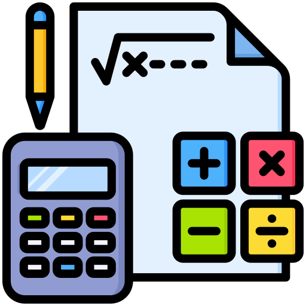

FisicLab es una herramienta interactiva diseñada para apoyar el aprendizaje de la física a través de simulaciones virtuales accesibles desde cualquier dispositivo. Construido con tecnologías web como HTML, CSS y JavaScript, este laboratorio permite a estudiantes y docentes experimentar con conceptos clave de manera visual, dinámica y segura.
Ya sea que estés explorando leyes del movimiento, principios de fluidos o circuitos eléctricos, FisicLab te brinda un espacio intuitivo para observar, manipular y comprender fenómenos físicos sin necesidad de materiales costosos ni instalaciones especiales.
Actualmente, la adaptación hacia la época digital ha generado un cambio radical con la integración de tecnologías en el sector educativo, especialmente con los métodos de enseñanza y aprendizaje en áreas como las ciencias naturales.
Gracias a estas invenciones tecnológicas los estudiantes pueden disfrutar jugando, experimentando y practicando al mismo tiempo, conceptos relacionados a los temas que se encuentran estudiando.
Teoría

En esta sección aprendes los conceptos abstractos que explican cómo funciona el mundo físico. Aquí se presentan las ideas, leyes y fórmulas que te ayudarán a entender por qué suceden ciertos fenómenos en el juego. Aunque no todo se ve a simple vista, estas explicaciones te darán las herramientas para resolver desafíos, experimentar y pensar como un verdadero científico.
Laboratorio
En esta sección puedes explorar diferentes simulaciones interactivas de física. Aquí podrás experimentar con conceptos como el movimiento, la presión o la fuerza, de forma visual y sencilla. Solo elige una simulación, ajusta los valores y observa cómo cambian los resultados. ¡Aprender física nunca fue tan fácil y divertido!
Tarea
En este apartado encontrarás actividades para reforzar lo aprendido en las simulaciones del laboratorio. Cada tarea está pensada para ayudarte a analizar, reflexionar y aplicar los conceptos físicos de forma práctica. Resuelve los ejercicios, responde las preguntas y pon a prueba tu comprensión.